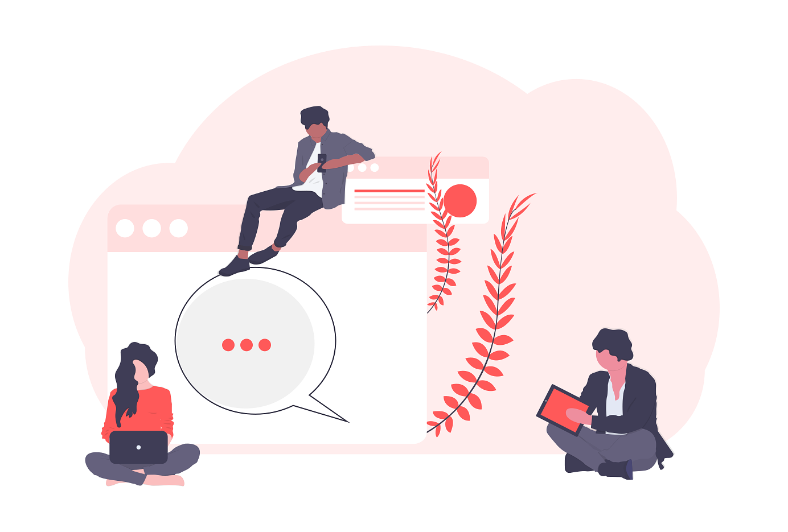

© 2020 STEMchats. All rights reserved.
The Breakdown
Our programs are divided into the categories of Celebrate, Stimulate, and Innovate. STEMchats programs are uniquely designed to impact all students, especially those from disadvantaged and minority backgrounds, by providing a transformative peer-to-peer STEM education.

Celebrate
Celebrate programs are designed to inspire students by highlighting the impactful things that students with strong STEM backgrounds are capable of through written journals and newsletters, bridging the divide between science and rest of society.
Stimulate
Stimulate programs teach students about fascinating scientific concepts through hands-on workshops, taught with the peer-to-peer technique, at underserved schools that demonstrate the positive and transformative real-life applications of STEM.

Innovate
Innovate programs connect students’ natural curiosity to opportunities that help them apply it through producing their own original work, such as the opportunity to conduct lab-based research projects and to write engaging articles about topics in science.